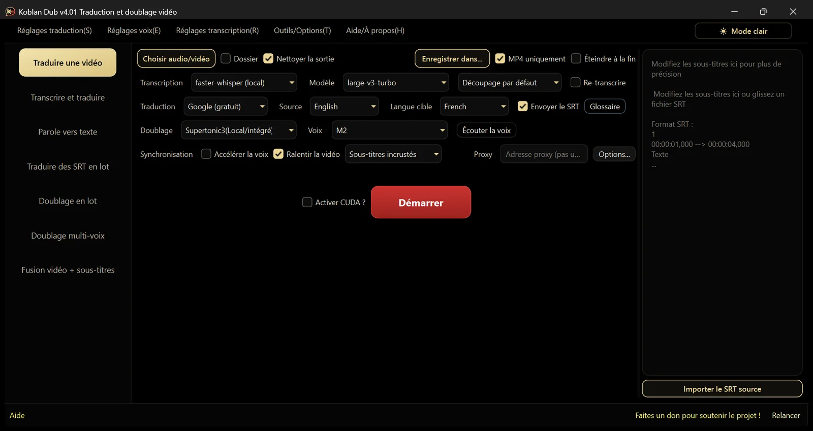
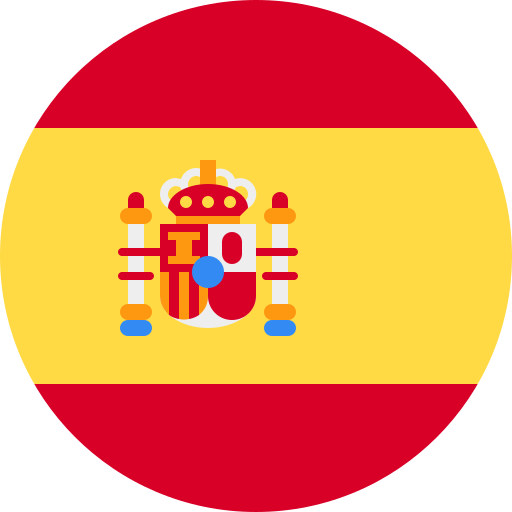
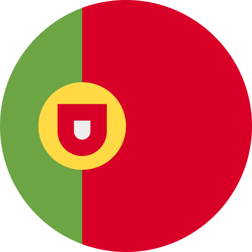
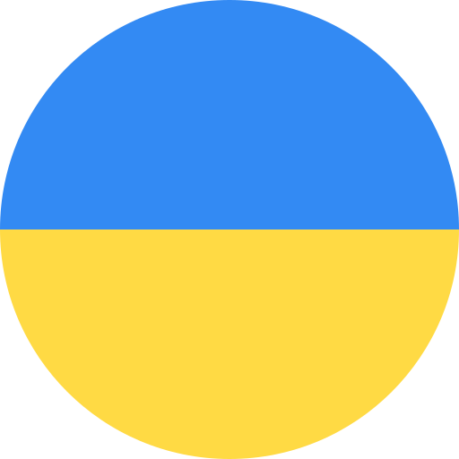

Chaque leçon, dans votre langue.
Koblan Dub transcrit, traduit et double vos vidéos dans une trentaine de langues, directement sur votre PC. Gratuit, pour Windows.
Écoutez la différence.
Un astronaute répond en anglais depuis la Station spatiale internationale. Le même passage, doublé et sous-titré en français par Koblan Dub, sans rien régler.
Tout se règle sur un seul écran.
Choisissez la vidéo et la langue d'arrivée, cliquez sur Démarrer. Tout le reste est prêt : transcription, traduction, voix, sous-titres incrustés, sortie en MP4.

Une trentaine de langues, au départ comme à l'arrivée.
Une formation en espagnol vers le français, un cours français vers l'anglais, une vidéo chinoise vers l'arabe : choisissez la langue de la vidéo et celle que vous voulez entendre.
- Français
 Anglais
Anglais
Espagnol
Portugais- Arabe
 Allemand
Allemand Italien
Italien- Néerlandais
- Chinois simplifié
- Chinois traditionnel
- Cantonais
 Japonais
Japonais- Coréen
 Hindi
Hindi- Bengali
- Ourdou
- Persan
- Turc
- Russe

Ukrainien Polonais
Polonais- Tchèque
- Hongrois
- Grec
- Suédois
- Hébreu
- Thaï
- Vietnamien
- Indonésien
- Malais
- Filipino
- Kazakh
La transcription et la voix française intégrée fonctionnent sans connexion. La traduction (Google) et les voix des autres langues (Edge-TTS) sont gratuites et passent par internet.
Bien plus qu'un traducteur de vidéo.
Sept modes, un par besoin. Chacun se trouve dans la colonne de gauche de l'application.
-
Traduire une vidéo
Donnez une vidéo dans une langue, récupérez-la doublée et sous-titrée dans une autre. Transcription, traduction, voix et montage s'enchaînent seuls.
Vidéo MP4 doublée -
Transcrire et traduire
Obtenez les sous-titres d'une vidéo, dans sa langue ou traduits, sans toucher à l'image.
Sous-titres SRT -
Parole vers texte
Un cours audio, une réunion, un podcast : la parole devient un texte horodaté.
Texte horodaté -
Traduire des SRT en lot
Déposez plusieurs fichiers de sous-titres : ils ressortent tous dans la langue choisie.
SRT traduits -
Doublage en lot
Transformez des fichiers de sous-titres en voix off, plusieurs à la fois.
Fichiers audio -
Doublage multi-voix
Une voix différente pour chaque réplique : pratique pour un dialogue ou une interview.
Audio à plusieurs voix -
Fusion vidéo + sous-titres
Incrustez des sous-titres dans des vidéos, par lots : chaque vidéo est associée au SRT qui porte le même nom.
Vidéos MP4 sous-titrées
Et dans le menu Outils
- Sous-titres bilingues, en fusionnant deux fichiers SRT
- Conversion entre SRT, ASS, VTT et TXT
- Séparation de la voix et de la musique de fond
- Fusion d'une vidéo, d'un audio et de sous-titres
Pour qui ?
-
Celles et ceux qui se forment
Ce cours en ligne acheté dans une langue étrangère, suivez-le enfin dans la vôtre.
-
Les créateurs de vidéos
Publiez vos vidéos dans une autre langue sans tout réenregistrer.
-
Étudiants et enseignants
Sous-titrez un cours, traduisez une conférence, gardez le texte.
-
Qui apprend une langue
Des sous-titres bilingues pour comprendre et apprendre en même temps.
-
Réunions et podcasts
Une trace écrite de tout ce qui s'est dit, sans prendre de notes.
Trois gestes, une vidéo dans votre langue.
-
Choisissez la vidéo et la langue
Une seule vidéo ou tout un dossier d'un coup, puis la langue que vous voulez entendre.
-
Cliquez sur Démarrer
Laissez le PC travailler. L'option « Éteindre à la fin » l'éteint une fois tout terminé.
-
Ouvrez le résultat
Votre vidéo en MP4, avec la voix et les sous-titres dans la langue choisie.
Tout tourne sur le processeur : sur un PC sans carte graphique, comptez 30 à 40 minutes pour une vidéo de 8 minutes.
Télécharger Koblan Dub
Gratuit, pour Windows 10 et 11 (64 bits). Le logiciel pèse 4,1 Go : il est livré en 4 fichiers, que ce bouton télécharge d'un seul clic.
Ou fichier par fichier, si un téléchargement a échoué :
- KoblanDub-Setup.exe 5,3 Mo
- KoblanDub-Setup-1.bin 1,86 Go
- KoblanDub-Setup-2.bin 1,86 Go
- KoblanDub-Setup-3.bin 393 Mo
Installer
-
Attendez la fin des 4 téléchargements : ils arrivent ensemble dans votre dossier Téléchargements. Laissez-les dans ce même dossier. Tant qu'un fichier s'appelle « Non confirmé … .crdownload », il n'est pas terminé.
-
Si le navigateur affiche « KoblanDub-Setup.exe n'est pas fréquemment téléchargé » : gardez-le, il est sûr. Edge : dans la liste des téléchargements, … à côté du fichier, puis Conserver, Afficher plus, Conserver quand même. Chrome : appuyez sur Ctrl + J, puis sur Conserver (ou « Télécharger quand même », selon la version) à côté du fichier. Firefox : cliquez sur la ligne du fichier, puis Autoriser le téléchargement. Ce message apparaît parce que le logiciel est récent et pas signé numériquement.
-
Ouvrez KoblanDub-Setup.exe et suivez les étapes. Les 3 autres fichiers sont lus automatiquement.
-
Si Windows affiche « Windows a protégé votre ordinateur », cliquez sur Informations complémentaires, puis Exécuter quand même. Ce message vient du fait que le logiciel n'est pas signé numériquement.
- Système
- Windows 10 ou 11, 64 bits
- Espace libre
- environ 9 Go
- Installation
- une dizaine de minutes, une seule fois
- Droits
- pas besoin d'être administrateur
Vérifier les fichiers (empreintes SHA-256)
c29c00f7d2853009546faf26c19edf425f62f5d486e01f048f91865e8468fe9e KoblanDub-Setup.exe 6dc4ac3deed6e6f722ec5d117fe09faab696b09a42e8ad4567b4d63a45bfd71d KoblanDub-Setup-1.bin 3e110a691bba4e6cc51c0397b873eccacce2986c3c4fff2ee0f25487c5a37f51 KoblanDub-Setup-2.bin bbec8f13c3aee3efc68214296c04398cc3462800a4f33eee36a978a703a0b784 KoblanDub-Setup-3.bin
Questions fréquentes
C'est vraiment gratuit ?
Oui. Koblan Dub est un logiciel libre : ni abonnement, ni compte, ni publicité.
Faut-il une connexion internet ?
Pour la traduction, oui : elle passe par Google, gratuitement. La transcription de la parole et la voix française intégrée fonctionnent sur votre PC, sans connexion. Les autres voix (Edge-TTS) ont besoin d'internet.
Quelles langues ?
Une trentaine, au départ comme à l'arrivée : français, anglais, espagnol, portugais, arabe, chinois, russe, allemand, japonais, turc et bien d'autres (la liste complète est plus haut). À l'installation, le logiciel est réglé de l'anglais vers le français : changez simplement la langue source et la langue cible. Pour doubler dans une autre langue que le français, choisissez une voix Edge-TTS (gratuite, en ligne).
Combien de temps prend une vidéo ?
Sur un PC sans carte graphique, comptez 30 à 40 minutes pour une vidéo de 8 minutes. Le premier lancement est un peu plus long, le temps de charger les modèles.
Ma vidéo est sortie sans voix française.
Vérifiez que la case « Voix » n'est pas réglée sur « No », puis relancez.
Mes fichiers s'appellent « Non confirmé … .crdownload ».
C'est le nom provisoire que le navigateur donne à un téléchargement en cours ou en attente de votre accord. Attendez la fin des téléchargements. Pour KoblanDub-Setup.exe, le navigateur attend aussi votre accord : sur Edge, … puis Conserver, Afficher plus, Conserver quand même ; sur Chrome, Ctrl + J puis Conserver ; sur Firefox, Autoriser le téléchargement. Les fichiers prennent alors leur vrai nom. N'ouvrez jamais un fichier .crdownload.
L'installation réclame un fichier manquant.
Vérifiez que les 4 fichiers sont bien arrivés en entier dans le même dossier, et qu'ils portent exactement les noms ci-dessus. Si vous avez téléchargé un fichier deux fois, le navigateur a pu nommer la copie « KoblanDub-Setup-1 (1).bin » : gardez l'original et supprimez les copies. Un fichier interrompu se retélécharge avec la liste « fichier par fichier ».
Et sur Mac ou Linux ?
Koblan Dub existe pour l'instant uniquement pour Windows 10 et 11.